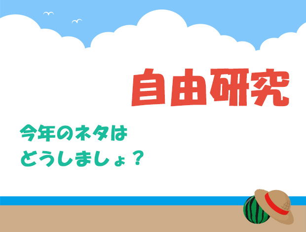

今年もまた自由研究の時期が…
今回のお悩みは小学生のお母さんから。
『毎年毎年、夏休みが近づいてくると、子どもの自由研究の内容に悩んでいます。何か良い案はないでよいでしょうか？』
少し早いですが、ついに今年もこの時期がやってきましたね。
自由研究は、もはやお父さんとお母さんも一緒になって悩むことがらになっているようです。
ここぞとばかりに張り切れるお子さんや親御さんなら何の問題もないのでしょうけれど、多くの人は「何とか無難に乗り切らねば…」と、考えるところでしょう（笑）。
さて、無難に乗り切るということならば、今の時代どうにでもなります。
本屋に行けばそれ系のネタ集は売っていますし、ネットで検索すればいくらでも出てくるでしょう。
これらを利用することや、ちょいとズルをして仕上げて提出することに、私はあえて責めはしません。
だって、人には向き不向きや反応するアンテナの違いがあるわけですから。
「小中学生の頃、どんな自由研究をした？～後ろ向き編～」
- 中３の時、トランジスタの研究と題してほとんど父親が主導権を握ってレポートを作成。──by 池村
- 転校が多かったのをよいことに、前年度に前の学校で提出したものをそのまま次の学校で提出した。──by 美人社長
- やらなかった。──by HP支配人
まあね、こんなことぐらいよくあります。
だから気が向かない夏に関しては、仕方なく…という姿勢で無難にやりすごすのもアリです。
でも、それだけでは何のアドバイスにもなりませんから、一つだけ大事なことを。
それは、
「どうせならやりたいことをやる！」
ということ。
うまく興味を引かれたものがあった場合は、「こんなの提出するのもどうかなあ」などと思わず、やりたいネタで勝負してみると、結構な確率で良いものができます。
私の場合は、小４のときの‘電磁ベル’（※アメブロ2014/06/04「算数・数学、家での関わり方②」を参照）が、非常に自分の心に残りました。
上に挙げたように父親の主導であったことには変わりませんが、自分なりに仕組みを理解し、面白さを感じながら意欲的に取り組めたことは、ものすごく財産になりました。
また庄本氏の場合は、小１のとき‘地球儀の作成’に精力的に取り組み、賞をもらったそうです。
当時は東急ハンズなどで売っているような、球形の発泡スチロールなどはありませんでしたから、四角い発泡スチロールを丹念に削って、そこから世界地図を見ながら丁寧に着色したという。
とにかく、興味の赴くままに取り組んだことは、少なくとも何かしら自分の中に残るものがありますし、シブシブ取り組んだものからは決して出ないオーラが評価にもつながりやすいと思います。
他の宿題にも同じ考え方を
やりたいことをやる、これは夏の３大宿題（私が勝手にそう呼んでいるだけですが）である「自由研究」「読書感想文」「ポスター」全てにあてはまるでしょう。
人から評価されるかどうかは一旦置いておきましょう。
それが、自分にとって糧になったり、新たな興味をもたらすものになっていなければ、そもそもどんな宿題もやる意味なんてありませんから。
「このテーマだったらやってみたい」
「このテーマなら自分のこだわりが出せる」
というものが誰しもあるはずです。逆に「こういう立派なテーマでやるべきだよなあ」という発想はダメ。
あくまで自分の得意・好き、にもっていく発想をしましょう。
例えば読書感想文では、ありきたりで良い子ちゃん的なものを書くぐらいなら、「私なら話の後半はこういう展開にする」と言い放ち、自作の物語を披露してもよいのです。
そんなの感想じゃない！ と言われたら、そんなのカンケ―ねえ！ と言ってやりましょう。
最後に、私が小６の時の夏の宿題だったポスターの思い出を。
夏休みの宿題として、何かしらのポスターを提出しなければならなかった小６の夏。
友人たちは無難に「交通安全」などのテーマで、よくありがちなポスターを仕上げていました。
私は絵を描くのが得意だったこともあり、「どうせ描くなら、人と違ったもの」「どうせ描くなら、小学生離れしたもの」を描きたいなあ…なんて、漠然と考えているうちに９月１日を迎えてしまいました（汗）。
言い訳を言うと、期限を過ぎてしまったのは、あくまで大作を仕上げたいという前向きな欲求からでした。
そして、自分なりに納得できる作品に仕上げたのは９月５日。
ちょっとバツが悪そうな顔をして担任のところへ持っていくと、「５組の○○先生が担当だから、そこへ持っていきなさい」と言われました。
朝のホームルームが始まる直前、６年２組の私は５組のドアをあけ、「遅れてすみません」というセリフとともに、女性の○○先生にそのポスターを渡しました（内心はイイ作品が出来たぞ、とドヤ顔でしたが）。
遅れはしたものの、意欲作ということで先生の反応も悪くはないだろうと高をくくっていた私を待っていたものは、予想外の雷でした。
６年２組からやってきた私を、５組の全生徒の前であれだけどやしつけなくたっていいじゃないか…というほどその場で長時間に渡りお説教…。
そりゃ期限は過ぎたけど、自分なりに良いものにしたかったんですよ、なんて言える雰囲気ではなく、しょんぼりとして自分のクラスに帰りました。
放課後の部活で、５組の友人から、
「池ちゃん、朝はきつかったなあ！」
と、フォローがあったのが唯一の救いでしたが。
こんなことも今では良い思い出ですわ（笑）。
ちなみに、ポスターのテーマは、
「覚せい剤撲滅！」
宇宙空間にぽっかり浮かぶ地球と、人の腕、注射器に×マーク。
ね、小学生離れしてるでしょ？（笑）